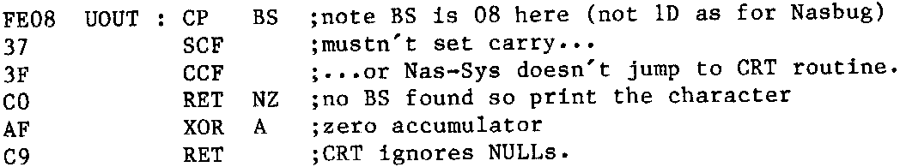

INMC 80 News |
February–April 1981 · Issue 3 |
| Page 9 of 55 |
|---|
G.M. Clarke, Edinburgh.
I am trying to understand the KBD routine in the T4 Monitor and can get so far and then come to a halt! I’ll presevere and get there but it strikes me that a useful inclusion in the INMC80 issues would be a section on Monitor Software; a nuts and bolts break down of the routine. One section could be treated each issue or even spread over two issues. I should be pleased if this suggestion were to be adopted and would hope that others would benefit also.
Dave Pyke, Preston, Lancs.
Many thanks for the excellent newsletters I have received since becoming an ‘INMC80’ member. All the work put in by committee members is reflected in the interesting and helpful articles and tips. For those of you with Nascom 2s who have been wondering how to print out check sums using the “T” command (re Mr. D. Tucker’s program for Nasbug monitors in issue 5), try the following:
Then activate the following routine by storing its address for the jump vector $UOUT, which is at address 0C77:
0C77 C3 80 0C $UOUT : JP UOUT
Now, to “switch on” the facility of ignoring backspaces (as produced by the Tabulate command to delete check soms), type U. To revert to normal CRT output, type N.
If you are using Richard Beal’s “keyboard Repeater”, then type in the routine UOUT at address 0C80, and modify address 0CA7 onwards as shown below:
0CA7 21 80 0C LD HL,UOUT 0CAA 22 78 OC LD ($UOUT+1),HL 0CAD DF 5B SCAL ZMRET
Now the vector at $UOUT, together with the keyboard repeat data, is loaded for you when you type E0C90.
Yours Nastaligically,
Rob Sheratt, Taynton.
| Page 9 of 55 |
|---|